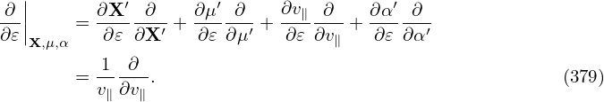
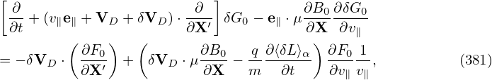
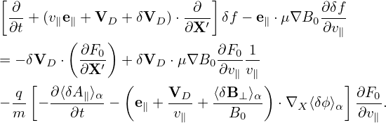
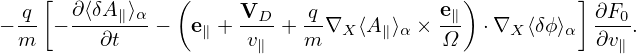
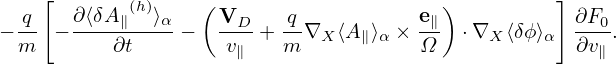

![[ ∂ ∂ ] ∂δf
∂t +(v∥e∥ + VD + δVD )⋅∂X-′ δf − e∥ ⋅μ ∇B0 ∂v
( ) ( ) ∥( )
= − δVD ⋅ ∂F0- + e∥-×∇X-⟨δϕ⟩α + v∥⟨δB-⊥⟩α- ⋅ μ-∇B0 ∂F0-
∂X ′ B0 B0 v∥ ∂v∥
q [ ∂⟨v ⋅δA ⟩ ( v2 μ 1 ⟨δB ⟩ ) ] ∂F 1
− -- − -------α-− v∥e∥ + -∥∇ × b+ ---- B0 × ∇B0 + -2E0 × B0 + v∥---⊥-α- ⋅∇X ⟨δϕ ⟩α --0(390),
m ∂t Ω ΩB0 B0 B0 ∂v∥ v∥](nonlinear_gyrokinetic_equation452x.png)
The gyrokinetic equation given above is written in terms of variables (X,μ,𝜀,α). Next, we transform it into coordinates (X′,μ′,v∥,α′) which are defined by
| (377) |
Use this definition and the chain rule, we obtain
and

Then, in terms of (X′,μ′,v∥,α′), equation (135) is written
Dropping terms of order higher than O(λ2), equation (380) is written as

The above equation drops all terms higher than O(λ2) and as a result the coefficient before ∂δf∕∂v∥ contains only the mirror force, i.e., −e∥⋅ μ∇B0, which is independent of any perturbations.
Note that the gyro-averaging operator in (X′,μ′,v∥,α′) coordinates is identical to that in the old coordinates since the perpendicular velocity variable μ is identical between the two coordinate systems. Also note that the perturbed guiding-center velocity δVD is given by
| (382) |
where ∂∕∂X (rather than ∂∕∂X′) is used. Since δϕ(x) = δϕg(X,μ′,α′), which is independent of v∥, then Eq. (378) indicates that ∂δϕ∕∂X = ∂δϕ∕∂X′.
Following the same procedures, equation (143) in terms of (X′,μ′,v∥,α′) is written as
next, try to recover the equation in Mishchenk’s paper:

δL = δΦ − v ⋅ δA,
| (384) |


The guiding-center velocity in the equilibrium field is given by
| (385) |
where
| (386) |
| (387) |
Using B∥0⋆ ≈ B0, then expression (385) is written as
| (388) |
where the curvature drift, ∇B drift, and E0 × B0 drift can be identified. Note that the perturbed guiding-center velocity δVD is given by (refer to Sec. C.3)
| (389) |
Using the above results, equation (383) is written as
Collecting coefficients before ∂F0∕∂v∥, we find that the two terms involving ∇B0 (terms in blue and red) cancel each other, yielding
This equation agrees with Eq. (8) in I. Holod’s 2009 pop paper (gyro-averaging is wrongly omitted in that paper) and W. Deng’s 2011 NF paper.